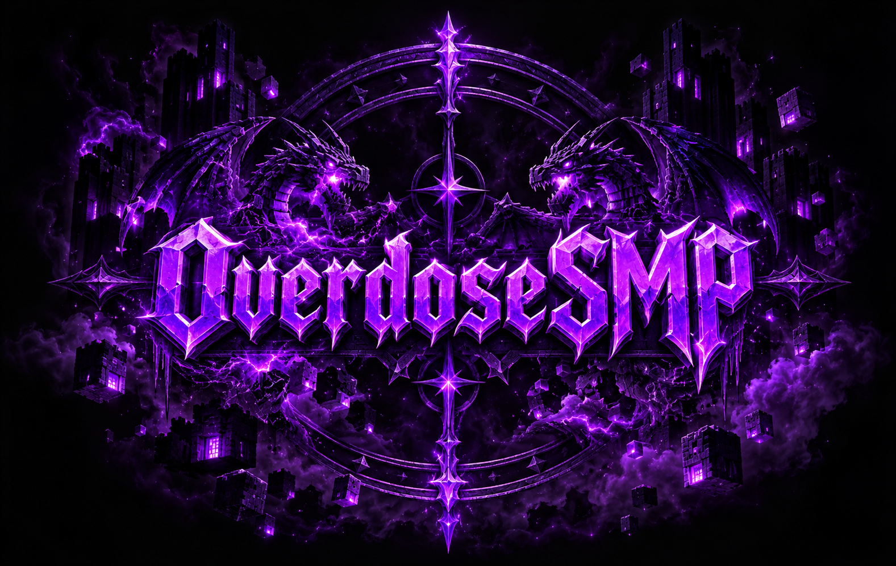

Custom progression
New potions, enchantments and rare rewards give you more things to work toward after the usual survival milestones.

MODDED SURVIVAL, WITHOUT LOSING MINECRAFT
A survival server built around better progression, exploration and multiplayer. New content where it adds something, vanilla Minecraft where it already works.
ABOUT THE SERVER
OverdoseSMP expands survival with custom systems, harder-to-find rewards and quality-of-life improvements. The goal is not to replace Minecraft with a giant modpack. It is to make a long-term SMP stay interesting.
New potions, enchantments and rare rewards give you more things to work toward after the usual survival milestones.
Improved terrain and reworked progression make travelling and finding valuable places feel worthwhile again.
Trading, player interaction and server-wide progression matter. The server is designed around people actually playing together.
OFFICIAL MODPACK
Both versions contain everything required to join OverdoseSMP. Full adds the complete visual and quality-of-life experience. Lite keeps things lean for lower-end PCs.
The intended OverdoseSMP setup with distant terrain, visual improvements, useful client features and performance mods.
Download FullOverdoseSMP Core & custom gameplayServer-specific systems and features built for OverdoseSMP.
OVERDOSECustom potions, enchantments and combat-focused survival additions.
Elytra progressionReworks how late-game flight is earned and adds new End rewards.
TectonicLarge-scale terrain improvements that keep a natural Minecraft style.
Voxy + LOD Server SupportEfficient distant terrain far beyond normal view distance.
Trim expansionsMore customization for tools, elytra and shulker boxes.
Trinket supportCompatibility for equipment systems used by supported mods.
Xaero's Minimap + World MapA clean minimap and full world map for navigation.
Inventory & tooltip improvementsSmall interface upgrades that make everyday play easier.
IrisShader support for players who want a more atmospheric look.
Animation, sound & visual improvementsExtra polish without changing Minecraft's core style.
Sodium, Lithium, FerriteCore & moreOptimization mods for FPS, memory use and general performance.
The essentials for OverdoseSMP with the important performance improvements, without the heavier visual extras.
Download LiteRequired server contentThe custom mods and compatibility needed to play OverdoseSMP correctly.
OVERDOSECustom potions, enchantments and combat-focused survival additions.
Elytra progressionThe server's custom late-game flight and End progression.
Tectonic compatibilityEverything needed to play in the server's custom terrain.
Xaero's mapsNavigation without the heavier distant-terrain renderer.
Core interface improvementsThe useful everyday features worth keeping without loading the pack with extras.
Sodium, Lithium, FerriteCore & moreThe main optimization mods stay included so Lite runs as smoothly as possible.
Heavy visual extrasNo Voxy distant terrain, shaders or unnecessary cosmetic additions.
Both packs are available from the official OverdoseSMP GitHub release.
SERVER RULES
The rules are intentionally simple. Play survival normally, do not ruin other players' work, and do not use unfair advantages.
No hacked clients, x-ray, duping, exploits, or other unfair advantages.
Mods outside the allowed mod list are not permitted if they provide a gameplay advantage.
Do not destroy, alter, or sabotage another player's base or builds without permission.
Do not take items from another player's base, storage, farms, or shops without permission.
No lag machines or intentionally causing excessive server lag or crashes.
Do not deliberately exploit bugs to bypass progression, economy systems, custom mechanics, or other server restrictions.
Use common sense. Finding a loophole in the wording of the rules does not automatically make something allowed.
JOIN THE SERVER
Choose Full for the complete setup or Lite for better performance.
Import the pack into Modrinth and launch the included Minecraft profile.
Connect to and start playing.
COMMUNITY
Join the Discord for server updates, announcements and the community. Voting links will be added when the server listings are ready.